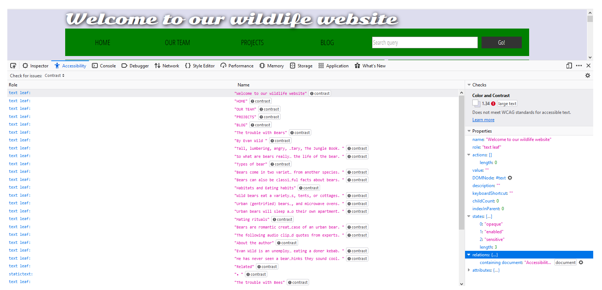
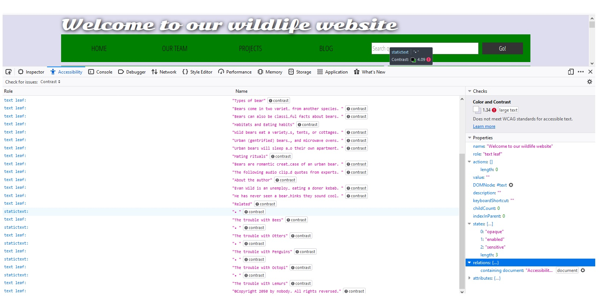

Improvements
By Lauren Clark
This is my improvements.html page where I will be discussing how I was able to implement the wildlife page given to me and what I did to allow this webpage to have more accessibility to its readers. Making pages accessible to all people is extremely important! Not only can viewers be impaired by sight and hearing but might have mental or physical disabilites as well - everyone deserves the ability to read a website as much as others!
Color Contrast Test
There were quite a few problems with the original page concerning contrast. Below are photos of what the contrast test looks like from the developer side.


Concerning the contrasting issues, the big concern is that the Accessibility Properties say that the original webpage does not meet WCAG standards for accessible test. So since I did enjoy the green color so I changed it to a light green, kept the three sections divided so that it's easier to tell what's what. I used a dark green for the headers as I decided didn't interfere with contrasting issues and kept the other font color as black.
HTML Semantic Changes
Some of the semantic changes I gave the text in the article actual paragraph tags, so that the screenreader is able to differentiate between them. I also gave the headers real h1-h6 tags and not just "font-size=#" so that they would be picked up. I also added "role="heading" which is an aria accessibility markup to be able to tell the reader that the h1-h6 are header elements. I made sure that each element of the page was tabbable so that viewers are able to tab through the page if using a screen viewer.
I gave the div class of "header" an actual "header" element because this will allow better functionality for webpages using screen readers. I as well added the "nav" element, so that when screen readers get to that part of the website, it lets the viewer know that it is a navigation area with links. This lets the screen reader know that this is a navigation area, how many items are listed and
CSS Changes
As for the CSS selectors, there was quite alot I had to change such as giving background colors proper hex colors, redefining headers with h1-h6 from "font-size=" and giving the headers a color and changed the font color, as well. There was quite alot of "div='nav'" code that was all changed directly to the "nav" element, so all of those were changed. The text in the footer was centered, the background color of the table was changed to white. Concerning the comment section, I changed the background to white, made the font of "Add Comment" smaller but of a good size, adjusted the "Your name" and "Your Comment" elements to be readable, as they were quite small before.
Some of the new CSS includes the accordian button that displays the transcript of the audio file beneath it when clicked. There is also CSS to make the background change when it is hovered over to show help show that some type of change will happen when the button is clicked. Another change I made was changing to a new Google font to 'Raleway' as I found the original one difficult to read.
Images
I gave each of the two images an "alt" property which provides alternative text and described them the best to my ability. I as well added "abindex="0" so that the images were tabbable, so that the "alt" property was utilized and read aloud some text of what was happening in the picture with as much detail as I could describe. I also added role="img" to give the pictures an aria role specifiying that they are images.
Audio Player
To make the audio player more accessible, I added an accordian button beneath the audio player that shows the transcript that is said in the audio. By adding the transcript below, I am aiding viewers that are impaired by hearing and can still see what's going on. This is important because if a transcript is not given, some of the viewers are deprived of fully experiencing the website to the best of their ability. I did not put in time stamps with the words since it was only 2 sentences long from a very short audio clip. If it is was longer, time stamped words or sentences may have been more helpful.
Form elements
To make the form elements more accessible, I added the type="search" which is a landmark for aria to let the viewer know that this is a search bar. I also added an aria-label of "search through site content" for the form so that the viewer has an auditory aid to know that this is a search bar.
Show/Hide Comments Control Button
To make the show/hide comment control button elements more accessible, I made sure that all of the font sizes were large enough to read and changed the background for better contrast. For the "show comments" button, I used the aria controls abindex=0 to make it tabbable and used the aria role of "button" so the user knows it's a button. I also added the aria controls such as abindex="0" to make the space tabbable, and added "aria=required" so that it reads "edit text required" when you enter a comment.
This makes is so that the viewer knows that something is supposed to be input there and is required. I also changed around some of the text sizing to allow the text to be more readable. As well, I allowed "Add Comment" to be tabbable and added the role of "button" to the form so that before it says "Enter your name", it says "Form" and follows with "edit text required" so it is obvious that something needs to be inputted here. I did add a piece of javascript to allow the "Add Comment" button be able to open and close upon pressing the return key. Without that added code, the viewer was not able to open the commenting section with only keyboard toggling which is important.
The Table
Concerning the table, I changed the table background to all white, but left the second row as the light blue color as I felt that helped diversify it. I thought that it might be a good idea to add abindex="0" to each of the pieces of the table so that someone who was visual impaired was able to go through each part individually, instead of having it read the entire table at once.
Other Improvements
One other improvement to make my website more accessible was to make the links change color when they are hovered over, such as in the navbar and the links in the sidebar. I think that even this subtle improvement is one of great vastness because it might not be obvious to some upon first sight that these are links. Besides that, I thought it would be a good improvement to add something to the bottom of the page saying "Additional Help". You never know who is viewing your website and what types of problems they might be having, despite putting all of your heart and soul into it! By providing an email link, it allows the viewer to know their thoughts are cared for, thought of and they have a lifeline, if needed!